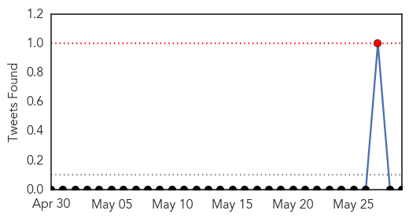
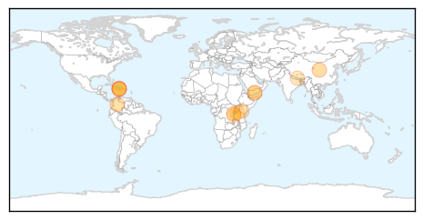
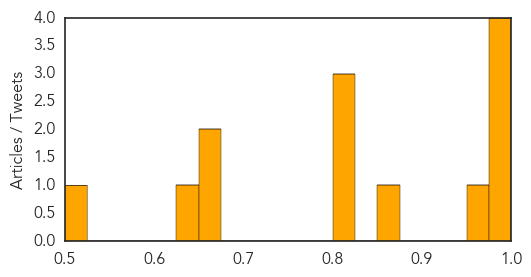

Mumps
30-Day Web Trend
9 alerts, 0 warnings
30-Day Twitter Trend
0 alerts, 0 warnings

Article Locations
Article Confidences

Top Articles:
Top Tweets:
-
No tweets found for May 29, 2015
Cholera
30-Day Web Trend
6 alerts, 0 warnings
30-Day Twitter Trend
0 alerts, 0 warnings

Article Locations
Article Confidences
Top Articles:
- 0.999
- Haiti struggles to stem cholera as rains come early
- 0.998
- Haiti struggles to stem cholera as rains come early
- 0.984
- Cholera Surges In Haiti As Rain Arrives Early
- 0.982
- Unicef provides emergency cholera treatment supplies for children and families
- 0.952
- Haiti to get US$50m grant for cleaner water and better sanitation in cholera hot spots
- 0.854
- The most from the coast
- 0.824
- Yemen: Yemen External Situation Report #16 -May 29, 2015
- 0.804
- When it rains, it pours
- 0.803
- Yemen External Situation Report #16 – May 29, 2015 - Yemen
- 0.664
- Burundi: Ban applauds political dialogue as UN appeals for wider cholera relief efforts
- 0.659
- Chinese Govt helps fishing community with easy access to health care -
- 0.642
- A rush to help Burundi’s refugee children in Tanzania
- 0.511
- Feature: China supports easy access to healthcare in Ghanaian community
Top Tweets:
-
No tweets found for May 29, 2015